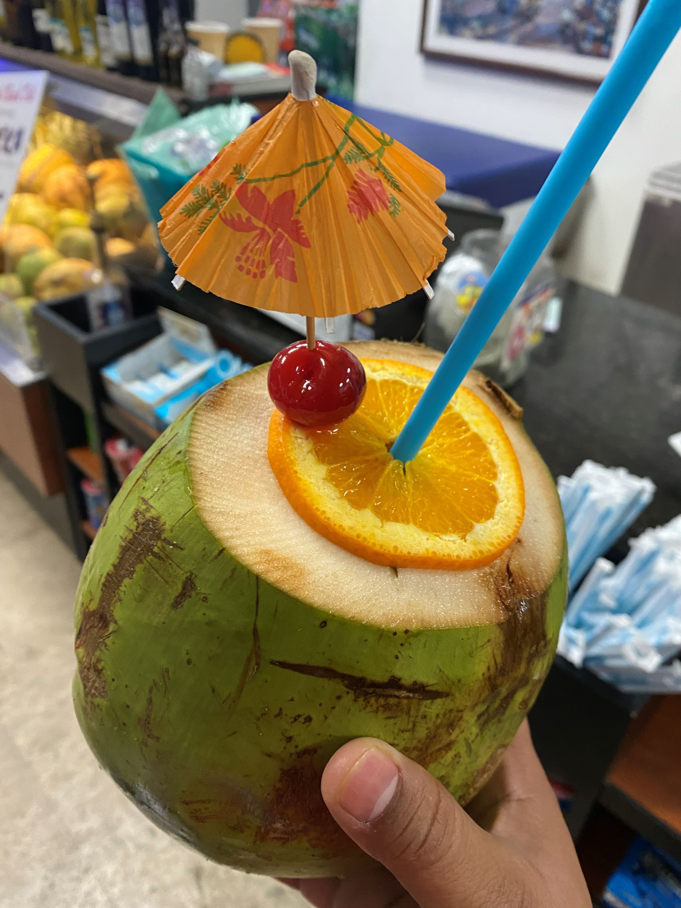

JPG Image

Description: This is a photo of a coconut water drink.
Image file type: Joint Photographic Experts Group (JPG)
Why did you chose the image: I selected this picture because it shows that I love traveling and exploring. While I was in El Salvador, they were selling coconut water drinks, and it's my favorite drink.
Source: A picture I took.